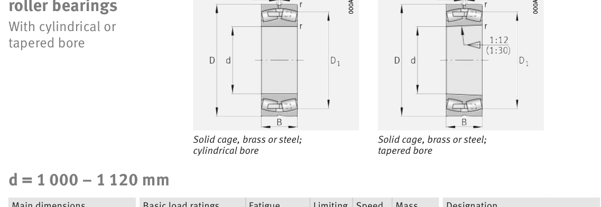

Original catalogue drawing - FAG Schaeffler HR 1, page 748

Scanned from the manufacturer catalogue page listing this part number. All part numbers printed on that table share the same drawing.
Scale cross-section
Blue = inner / outer ring, yellow = rolling element. Drawn to scale from this part's own
dimensions for selection reference only - not a manufacturing or assembly drawing.
Dimension table (mm / inch)
Symbol
Dimension
mm
inch
d
Bore diameter
1000
39.3701
D
Outside diameter
1580
62.2047
B
Inner-ring / bearing width
462
18.189
r
Chamfer (min)
12
0.4724
Notes
Weights are given in kg. Load ratings are shown in both the original catalogue units and the converted value (1 N = 0.2248 lbf). Data is provided for selection reference only - confirm against the latest official catalogue before ordering.
Main dimensions
Bore d (mm)
1000
Outside dia. D (mm)
1580
Width B (mm)
462
Inner-ring shoulder dia. D1 (mm)
1
Load ratings & speeds
Basic dynamic load rating Cr (lbs)
4945797
Basic static load rating Cor (lbs)
11465256
Basic dynamic load rating Cr (N)
2.2e+07
Basic static load rating C0r (N)
5.1e+07
Fatigue limit load Cur (N)
3.15e+06
Factor e
0.29
Factor Y0
2.28
Limiting speed nG (rpm)
320
Reference speed nB (rpm)
126
Weight
Weight (kg)
3474.0
Mounting dimensions (fillets / shoulders)
Housing fillet r max (mm)
12
Shaft shoulder da (mm)
1048
Housing shoulder Da (mm)
1532
Housing fillet ra max (mm)
10
Bearing life (ISO 281 basic rating life)
C / P
Equivalent load P (N)
L10 (106 rev)
L10h at 100 rpm
4
5,500,000
102
16,932
6
3,666,667
392
65,416
8
2,750,000
1,024
170,667
10
2,200,000
2,154
359,072
15
1,466,667
8,323
1,387,244
Basic rating life per ISO 281: L10 = (C/P)10/3 with C = 22,000,000 N. Hours = L10 x 106 / (60n). Life-modification factors for lubrication, contamination and temperature (aISO) are not included.
Source & traceability
Brand
FAG
Source catalogue
FAG / Schaeffler Rolling Bearings HR 1
Catalogue page
p.748 (dimensions)
Load ratings in newtons, fatigue limit load Cur, limiting speed nG and reference speed nB.
Send us the quantity you need and we will come back with price and
lead time, normally within 24 hours. Equivalent parts from other brands can be quoted at the same time.